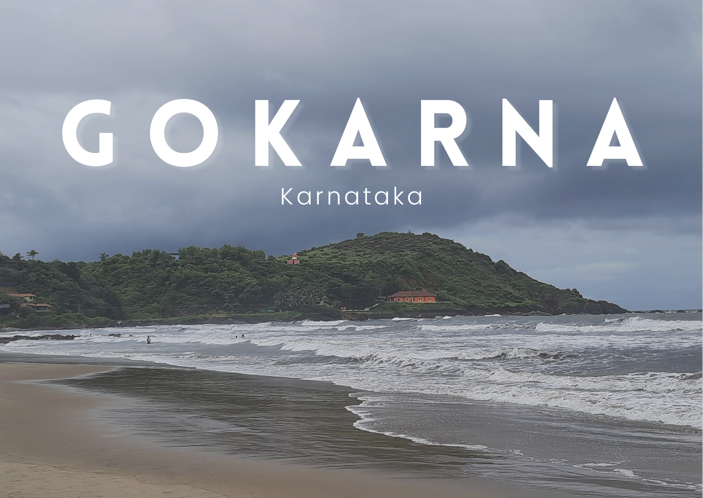

Gokarna:
Gokarna, which translates to "Cow's Ear" in Sanskrit, is steeped in mythological significance. Legend has it that Lord Shiva emerged from the ear of a cow (Gokarna) at this very spot, hence the name. As a result, the town is considered a sacred pilgrimage site and is dotted with numerous temples dedicated to Lord Shiva, the most famous being the Mahabaleshwar Temple.
Perched atop a hill overlooking the Arabian Sea, the Mahabaleshwar Temple is not only an architectural marvel but also a spiritual epicenter. Devotees flock here to seek blessings and perform rituals, especially during the Maha Shivaratri festival when the town comes alive with colorful processions and fervent celebrations.

Discovering the Charms of Gokarna:
A Hidden Gem of South India
Nestled along the pristine coastline of Karnataka, India, lies a tranquil haven known as Gokarna. This picturesque town, often overshadowed by its more popular neighbor Goa, offers a serene escape for travelers seeking a blend of spirituality, natural beauty, and laid-back beach vibes. With its golden sandy beaches, ancient temples, and lush greenery, Gokarna holds a unique charm that captivates visitors from around the globe.
The Spiritual Essence:
Gokarna, which translates to "Cow's Ear" in Sanskrit, is steeped in mythological significance. Legend has it that Lord Shiva emerged from the ear of a cow (Gokarna) at this very spot, hence the name. As a result, the town is considered a sacred pilgrimage site and is dotted with numerous temples dedicated to Lord Shiva, the most famous being the Mahabaleshwar Temple.
Perched atop a hill overlooking the Arabian Sea, the Mahabaleshwar Temple is not only an architectural marvel but also a spiritual epicenter. Devotees flock here to seek blessings and perform rituals, especially during the Maha Shivaratri festival when the town comes alive with colorful processions and fervent celebrations.
Tranquil Beaches:
Gokarna's coastline is adorned with pristine beaches that offer a serene escape from the hustle and bustle of city life. Each beach has its own unique character, catering to different preferences of travelers.
Kudle Beach is the most popular and easily accessible, boasting soft golden sands framed by coconut groves. It's an ideal spot for sunbathing, swimming, and indulging in water sports like surfing and snorkeling.
Om Beach, named for its distinctive shape resembling the auspicious Hindu symbol 'Om,' is another favorite among visitors. Surrounded by rocky cliffs and offering breathtaking views of the Arabian Sea, Om Beach is perfect for leisurely strolls, yoga sessions, and beachside picnics.
For those craving solitude, Half Moon Beach and Paradise Beach are hidden gems accessible only by boat or via a scenic trek through the lush forest. Here, one can unwind amidst untouched natural beauty, listening to the soothing sound of the waves crashing against the shore.